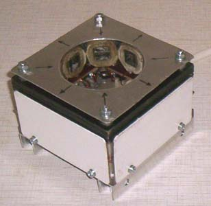
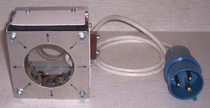
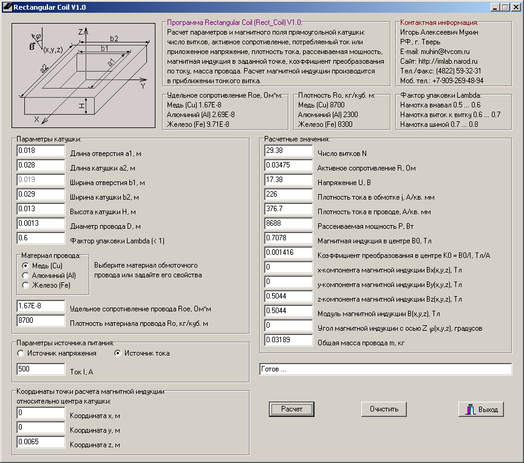
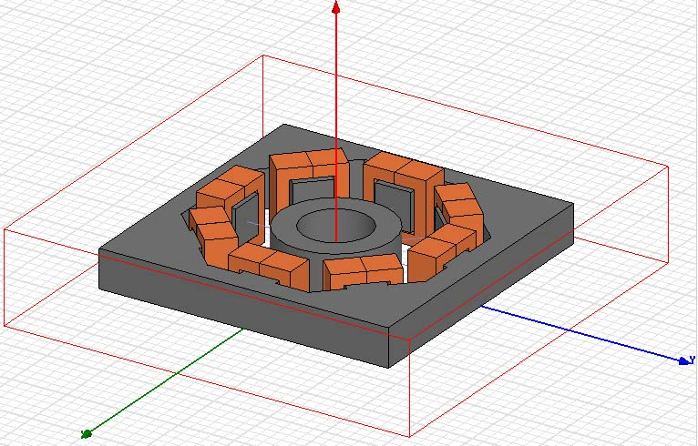
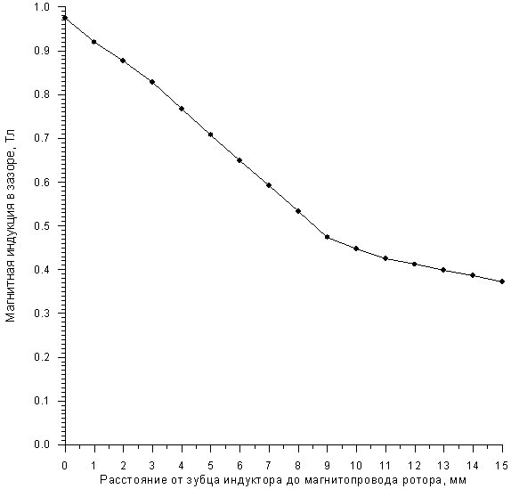
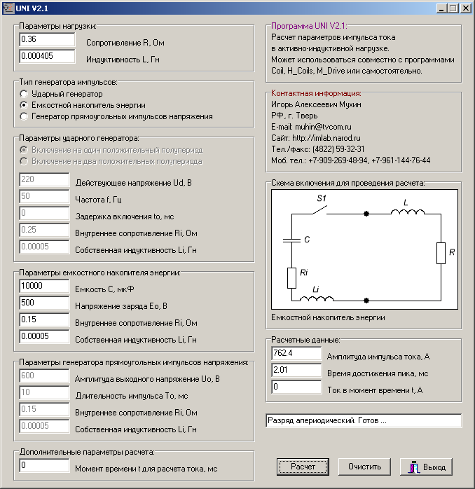
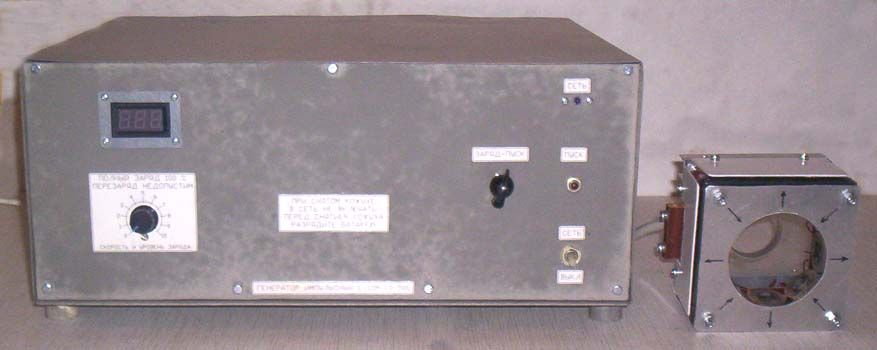
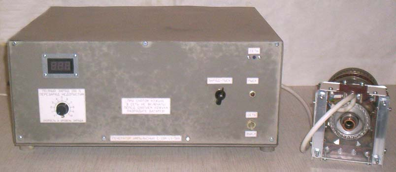
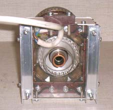

8-полюсный
импульсный магнитный индуктор для радиального знакопеременного
намагничивания роторов электрических машин с постоянными магнитами

1. Назначение
Индуктор разработан и изготовлен для установки импульсного намагничивания и частичного размагничивания [9] постоянных магнитов роторов 8-полюсных электрогенераторов и электромоторов при их изготовлении или ремонте [6]. Разработка велась под конкретный тип электрогенератора с ротором диаметром 80 мм и постоянными магнитами состава ални (алнико) поперечным сечением 16 х 17 мм2. Индуктор предназначен для совместной работы с генератором мощных импульсов тока (импульсным генератором), в качестве которого используется емкостной накопитель энергии [3] 1 кДж 500 В. Скомплектованная установка позволяет производить одноосное радиальное (относительно оси ротора) знакопеременное частичное или полное намагничивание, а также частичное размагничивание постоянных магнитов различных марок [5] - ферриты, ални, алнико и магнитопласты на той же основе [4].
2. Технические данные:
3. Конструкция
На рис. 3.1 и 3.2 показан внешний вид 8-полюсного импульсного магнитного индуктора в сборе.

Рис. 3.1. 8-полюсный магнитный индуктор в сборе (вид со стороны передней защитной крышки).
Рис. 3.2. 8-полюсный магнитный индуктор в сборе (вид со стороны задней защитной крышки).
Индуктор состоит из наборного стального статора с зубцами квадратного поперечного сечения, на которые надеваются прямоугольные катушки. Выводы катушек соединяются встречно-последовательно с использованием монтажных планок с винтовыми соединениями и подключаются к кабелю с выходным разъемом для подключения к емкостному накопителю. Спереди, сзади и с боков катушки индуктора закрываются защитными крышками. В передней и задней защитных крышках прорезаны отверстия под намагничиваемый ротор.
4. Расчеты
Расчеты 8-полюсного индуктора выполнены с помощью программ Ansoft Maxwell [1], Rectangular Coil [8] и UNI [2] методом последовательных итераций. Число витков и активное сопротивление прямоугольных катушек индуктора определяется по их габаритам и диаметру обмоточного провода программой Rectangular Coil (рис. 4.1), индуктивность индуктора и индукция генерируемого магнитного поля находятся в программе Ansoft Maxwell по модели индуктора (рис. 4.2), программа UNI позволяет по рассчитанному активному сопротивлению и индуктивности вычислить амплитуду и длительность импульса тока для заданного типа импульсного генератора (рис. 4.4).

Рис. 4.1. Расчет прямоугольной катушки индуктора с помощью программы Rectangular Coil.
В соответствии с рис. 4.1 расчетное значение числа витков одной катушки индуктора равно 30, а активное сопротивление примерно 0.035 Ом. Расчетное суммарное активное сопротивление последовательно-встречно включенных катушек индуктора составляет 0.28 Ом, что достаточно хорошо согласуется с измеренным активным сопротивлением изготовленного индуктора (0.36 Ом с учетом всех винтовых соединений и подключающего кабеля).

Рис. 4.2. Модель 8-полюсного индуктора в программе Ansoft Maxwell. Шаг сетки 5 мм. Предполагается, что магнитопровод ротора имеет внешний диаметр 50 мм, а зазор между зубцом индуктора и магнитопроводом ротора составляет 15 мм.
Расчеты в программе Ansoft Maxwell произведены для магнитодвижущей силы (МДС) одной катушки индуктора 15000 А ∙ витков (ток 500 А через катушку в 30 витков), т. е. для существенно меньшего значения, чем может создать емкостной накопитель энергии 1 кДж 500 В при максимальном заряде (амплитуда тока примерно 760 А, МДС примерно 22000 А ∙ витков). Заданная точность расчетов 0.5 %. Расчетное значение индуктивности индуктора при последовательно-встречном соединении катушек 0.405 мГн на постоянном токе. Это значение подставляется в программу UNI для уточнения достижимой амплитуды импульса тока (рис. 4.4). График распределения магнитной индукции в зоне намагничивания, т. е. в зазоре между зубцом индуктора и магнитопроводом ротора намагничиваемого электрогенератора, показан на рис. 4.3. Индукции магнитного поля при амплитуде тока 500 А (при неполном заряде емкостного накопителя 1 кДж 500 В) вполне хватает для намагничивания постоянных магнитов марки ални или алнико. При полном заряде емкостного накопителя генерируемое индуктором магнитное поле будет вполне достаточным для намагничивания ферритовых магнитов.

Рис. 4.3. Распределение магнитной индукции в зазоре между зубцом индуктора и магнитопроводом намагничиваемого ротора.

Рис. 4.4. Расчет амплитуды и длительности импульса тока при подключении индуктора к емкостному накопителю энергии 1 кДж 500 В.
5. Испытания
На рис. 5.1 показан внешний вид установки импульсного намагничивания и частичного размагничивания постоянных магнитов [9] с использованием 8-полюсного импульсного индуктора и емкостного накопителя энергии 1 кДж 500 В [3].

Рис. 5.1. Установка импульсного намагничивания и частичного размагничивания постоянных магнитов в комплекте с емкостным накопителем энергии 1 кДж 500 В.
Измерения амплитудных значений магнитной индукции на торцах зубцов индуктора проводились с помощью импульсного тесламетра [7]. Измеренная амплитуда магнитной индукции на торцах зубцов индуктора соответствует расчетной (примерно 1 Тл при неполном заряде емкостного накопителя).
6. Применение
Внешний вид установки импульсного намагничивания с намагничиваемым электрогенератором показан на рис. 6.1. Ротор электрогенератора вставляется в индуктор со стороны передней защитной крышки (рис. 6.2).

Рис. 6.2. Установка импульсного намагничивания и частичного размагничивания в комплекте с емкостным накопителем энергии 1 кДж 500 В. 8-полюсный импульсный индуктор надет на ротор электрогенератора.

Рис. 6.1. 8-полюсный импульсный индуктор на роторе электрогенератора.
Направление намагничивающего (размагничивающего) поля можно изменять на противоположное либо поворотом 8-полюсного импульсного индуктора на 450, либо коммутацией выходных разъемов емкостного накопителя энергии. Определить тип полюса намагниченного ротора (северный или южный) можно с помощью тесламетра или магнитно-механического указателя магнитных полюсов [7].
Ссылки:
22.05.2021
Альтернативные источники
энергии
Компьютеры и
Интернет
Магнитные поля
Механотронные системы
Перспективные
разработки
Электроника и
технология